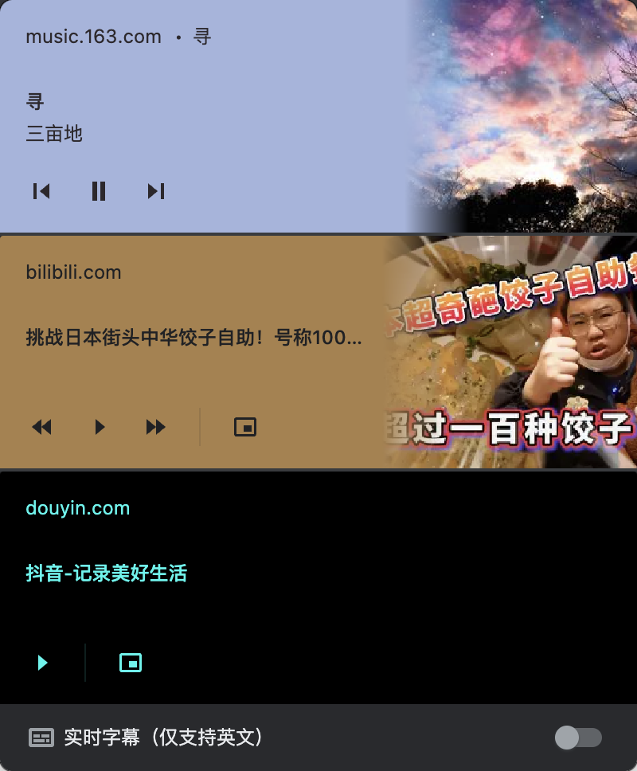
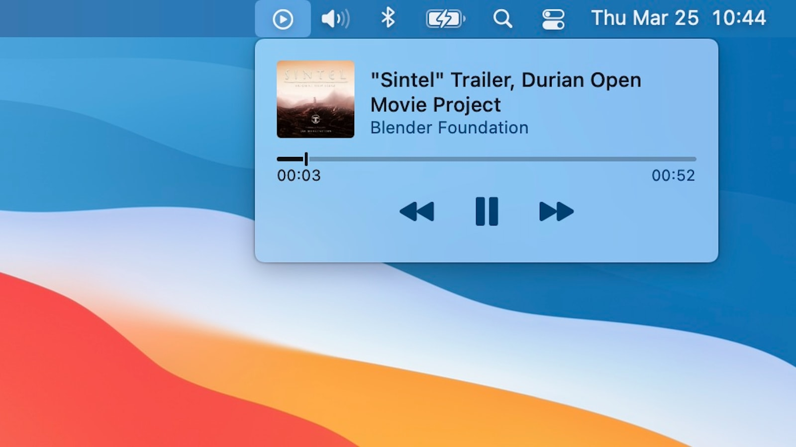

媒体元数据相关方法
最近一直好奇 chrome / 操作系统是如何获取到用户网站正在播放的媒体信息(标题, 作者, 播放进度, 专辑封面)并提供类似上一首下一首 API 的


曾经有了解过 Linux 上基于 D-Bus 的 mpris 协议大概可以猜到系统可以通过类似的协议获取到浏览器上报的媒体信息, 但是一直不明白浏览器是怎么获取到网站播放的媒体信息的.
<video> 标签上的元数据
考虑到 <video> 有一个 onloadedmetadata 回调, 感觉 <video> 上肯呢个存着视频的元数据, 于是读取 <video> 的属性, 发现上面只有播放进度, 总时长, 视频长宽这几个信息. 视频的标题, 作者, 专辑名并没有
从无障碍角度入手
对于视觉障碍用户, 网站在播放视频的时候一定做了特殊照顾(例如只展示封面, 自动朗读字幕) 在 MDN 上找到了 WebVTT 该文件标识了媒体标题, 但是这似乎并不是一套强制标准, 很多网站都没有使用
从 API 角度入手
我们只是想知道 JS 上报媒体信息的协议名字是什么, 于是我尝试爬取包含视频元信息的请求报文, 如果一个包里面只有媒体元数据, 而这个 API 又是有语义的(例如 example.com/api/video/xxx-api/) 那么大概能猜到存在一个 xxx 协议用于描述元数据. 但是没有收获
从 Chromium 设计文档入手
既然是 Chromium 的功能, Chromium 一定会有关于这方面的介绍. 在 Chromium 项目的开发者设计文档索引 搜索 media (因为视频音频都可以被检测, 所以不能搜索 video / audio) 找到 MediaGallery 这个 feature, 在介绍中可以看到
Overview Media and metadata access API. ...
在 MDN 上以 Media and metadata access API 为关键字就可以找到 MediaMetadata 这个 API.
这就是我们想要的东西, 他包含了: 标题, 艺术家, 组, 创建者, 专辑名, 媒体相关的图片(一般是专辑封面)数组
一下是一个 metadate 样例
navigator.mediaSession.metadata = new MediaMetadata({
title: "Unforgettable",
artist: "Nat King Cole",
album: "The Ultimate Collection (Remastered)",
artwork: [
{
src: "https://dummyimage.com/96x96",
sizes: "96x96",
type: "image/png",
},
{
src: "https://dummyimage.com/128x128",
sizes: "128x128",
type: "image/png",
},
{
src: "https://dummyimage.com/192x192",
sizes: "192x192",
type: "image/png",
},
{
src: "https://dummyimage.com/256x256",
sizes: "256x256",
type: "image/png",
},
{
src: "https://dummyimage.com/384x384",
sizes: "384x384",
type: "image/png",
},
{
src: "https://dummyimage.com/512x512",
sizes: "512x512",
type: "image/png",
},
],
});更多功能
mediaSession 还可以控制播放位置, 切换音轨, 挂断电话, 切换麦克风, 开启摄像头
参考: https://web.dev/media-session/